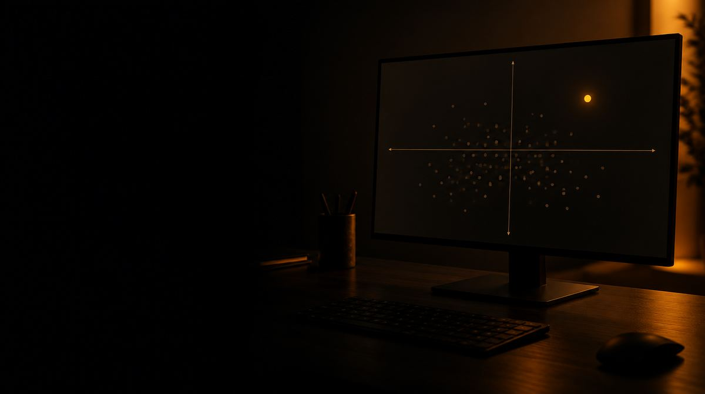
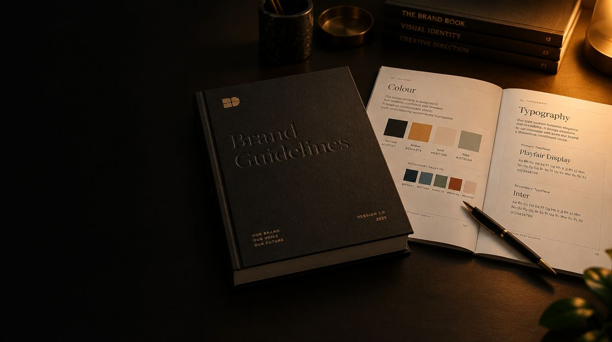

La plupart des identités n’échouent pas à cause du graphisme, mais parce que personne ne sait dire en une phrase ce que la marque représente. Nous commençons donc par le marché, la concurrence et le public cible, et nous définissons le message que vous voulez occuper et celui que vous laissez sciemment aux autres. Depuis Pratteln, pour les entreprises de la région bâloise, d’Argovie et de toute la Suisse alémanique.
Sur cette position, nous construisons le système : logotype, couleurs, typographies, univers visuel, ton. Pas un logo dans le vide, mais une boîte à outils avec brand guide et modèles, grâce à laquelle votre équipe conçoit elle-même offres, posts et présentations.
Pour les entreprises qui ont plusieurs produits, nous clarifions aussi l’architecture de marque : ce qui se range sous l’ombrelle, ce qui reçoit son propre nom, ce qui disparaît.
Durée typique4 à 8 semaines
Ce qui est inclus
Le périmètre en un coup d’œil.
-
Marché, concurrence et publics cibles
Vue du marché, état des lieux, publics cibles et contexte.
-

Un positionnement en une phrase
Une phrase qui tient et que tout le monde porte.
-

Logotype et logo
Un signe avec des règles, pas un logo dans le vide.
-
Couleurs, typographie et univers visuel
Couleur, typographie, image et ton en boîte à outils.
-
Architecture de marque
Ce qui se range sous l’ombrelle, ce qui reçoit son propre nom.
-

Brand guide et modèles
Brand guide, modèles et une introduction pour l’équipe.
Qu’est-ce qui doit devenir plus simple après le branding ?
Votre équipe de vente doit pouvoir expliquer clairement l’offre. Votre marketing ne doit pas repartir de zéro à chaque présentation ou campagne. Et un nouveau prestataire doit comprendre comment votre marque s’exprime et à quoi elle ressemble. C’est sur ces usages concrets qu’un projet de branding peut s’orienter.
Tout commence donc par un état des lieux : quels messages sont encore justes ? Quels modèles fonctionnent ? Où le site web, les offres et les réseaux sociaux se contredisent-ils ? C’est de là que découle le périmètre du projet. Un nouveau logotype est une tâche possible ; parfois, ce qui manque surtout, c’est un positionnement clair ou un système graphique applicable de façon fiable.
Quels résultats font partie de la remise ?
- Positionnement et messages
- Une description compréhensible de l’offre, du public cible et de ce qui vous distingue de la concurrence. Avec des messages que vous pouvez étayer par vos prestations et expériences réelles.
- Design avec règles d’application
- Les variantes de logo convenues, les couleurs, les typographies et les règles pour l’univers visuel. Ce qui compte aussi, c’est leur utilisation sur petits écrans, sur fond sombre et dans les documents du quotidien.
- Des modèles pour le quotidien
- Les supports dont votre équipe a vraiment besoin : par exemple une présentation, une publication pour les réseaux sociaux ou une page de garde d’offre. Nous définissons ensemble quels modèles font partie du mandat.
- Fichiers organisés et introduction
- Un classement clair des fichiers convenus et un brand guide. Les droits d’utilisation, les licences nécessaires et la mise à jour des modèles font partie de la planification de la remise.
Le branding avec un service marketing existant
Votre équipe connaît les produits, les questions des clients et les circuits de décision internes. Nous complétons cette proximité par l’expérience acquise sur différentes marques et dans la mise en œuvre sur divers canaux. Vous pouvez nous confier le projet entier ou une partie délimitée, par exemple le positionnement, une déclinaison de campagne ou l’extension de modèles existants.
Pour décider vite, il faut un interlocuteur responsable et des retours regroupés. Au lieu de recueillir des avis de goût isolés, nous évaluons les propositions au regard des objectifs convenus : le public cible comprend-il l’offre ? Le message correspond-il à la prestation ? Les collaborateurs peuvent-ils appliquer le système eux-mêmes ?
Relier marque, communication et site web
La stratégie de communication définit quels messages doivent atteindre quelles personnes, par quels canaux. Le branding leur donne une identité reconnaissable. La création de sites web en tire des pages, des contenus et des actions concrètes. Nous planifions aussi les transitions, pour éviter trois concepts séparés les uns des autres.
Stratégie de communication : qui vous atteignez et avec quoi
Quand chaque campagne repart de zéro, il manque souvent une base commune. Une stratégie part de votre situation : quelle offre doit croître ? Quels publics cibles sont pertinents ? Quelles questions ou réticences freinent une décision ? C’est de là que découlent les messages et les canaux. Le choix d’un réseau social ne vient donc pas en premier.
- Situation initiale : communication existante, contenus disponibles et enseignements acquis.
- Publics cibles : décideurs, codécideurs et leurs besoins d’information.
- Messages : bénéfices, arguments et preuves solides.
- Canaux : quel rôle jouent le site web, les réseaux sociaux, les ads et la newsletter.
- Mise en œuvre : priorités, responsabilités et contenus nécessaires.
- Critères de succès : quel changement vous voulez observer et comment il est mesuré.
Le savoir existant reste le point de départ. Nous impliquons vos responsables et condensons leurs points de vue en une direction commune. C’est particulièrement utile lorsque plusieurs services, partenaires externes ou marchés sont concernés. Une stratégie applicable répond aussi à des questions pratiques : quel message va sur la page d’accueil ? Quels thèmes méritent leurs propres contenus ? Que doit expliquer l’équipe de vente ?
Votre diagnostic de marque. En 10 minutes.
Montrez-nous où votre marque est visible. Nous l’examinons et enregistrons dix minutes d’écran : ce qui est cohérent, ce qui diverge et ce que nous mettrions en ordre en premier.
- Si votre identité dit en une phrase ce que vous incarnez
- Signes, couleurs et typographies : cohérents ou accumulés
- L’effet que vous produisez face à la concurrence
- Ce qui manque à votre équipe au quotidien
Parlons-en
Est-ce adapté
à votre projet ?
Quinze minutes suffisent pour une évaluation honnête, même si rien n’en découle au final.
Prendre rendez-vous- Une position qui tient en une phrase
- Une boîte à outils plutôt que des pièces isolées
- Des modèles pour le quotidien de votre équipe
- Des fichiers organisés et une introduction
- L’architecture de marque clarifiée s’il y a plusieurs produits
Questions fréquentes sur le projet de branding.
Encore une question ? Écrivez-nous. Nous répondons en général le même jour ouvrable.
C’est l’état des lieux qui le montre. Si le logo reste adapté, le mandat peut se concentrer sur le positionnement, les modèles ou un système cohérent. Les directives de marque existantes en constituent la base.
Surtout les questions stratégiques, le nombre de supports nécessaires, les versions linguistiques et les étapes de validation. Pour comparer équitablement des offres, elles doivent inclure les mêmes résultats et formats de fichiers. Notre guide sur la planification du budget marketing aide à réunir projets ponctuels et mise en œuvre continue. Les différents facteurs de coût sont décrits dans l’article Combien coûte un branding ?
Un branding clairement délimité se déroule sous forme de projet. Les supports récurrents, le contenu et les campagnes peuvent ensuite être intégrés à votre abonnement marketing. Votre équipe interne peut continuer à travailler elle-même avec les modèles convenus.
Les bases existantes sont utiles. Lors du briefing, nous clarifions quelles décisions sont déjà prises et lesquelles manquent encore pour la communication. Ainsi, le mandat reste clairement délimité.
Oui. La stratégie peut servir de base à votre mise en œuvre interne. Les lignes directrices, modèles et introductions dont vous avez besoin pour cela font partie du périmètre du projet.